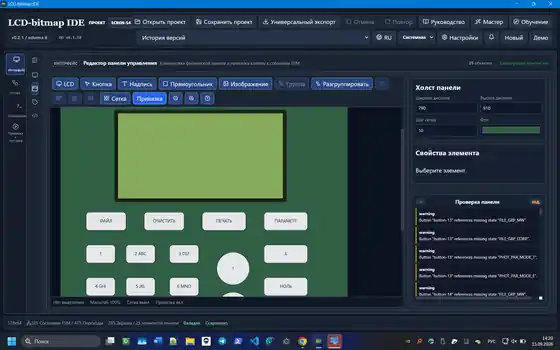
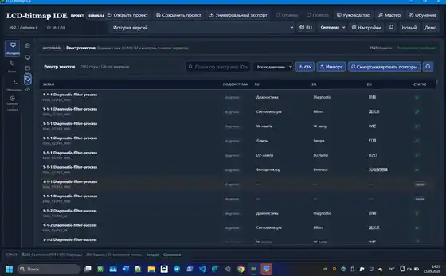

LCD authoring
Пиксельные экраны, text, lines, rectangles, bitmap layers, glyph editing, templates и явные границы display profile.
FLAGSHIP · OPEN SOURCE · EMBEDDED HMI
Инженерная среда, которая объединяет макеты embedded-дисплея, физические controls, поведение прибора и многоязычный контент в одну детерминированную project model. Её можно симулировать, проверять, экспортировать и автоматизировать.

Даже небольшой монохромный дисплей может содержать сотни экранов и состояний, физические кнопки, runtime tags, alarms, повторяющиеся строки и правила навигации. Если всё это хранится отдельно в макетах, таблицах и firmware-коде, команда теряет единый детерминированный source of truth.
LCD Bitmap IDE хранит visual model, FSM-поведение, физическую панель, text registry, runtime metadata и параметры экспорта в одном переносимом проекте.
Пиксельные экраны, text, lines, rectangles, bitmap layers, glyph editing, templates и явные границы display profile.
State graph, global/local events, transitions, subsystem views, automatic layout и structural validation.
Моделирование панели управления, размещение кнопок и привязка к FSM events с проверкой отсутствующих state references.
Центральный RU / EN / ZH реестр текстов, статус полноты, import/export и синхронизация повторяющихся строк.
Экспорт экранных assets и структур для последующей embedded integration, а не только создание mockups.
Локальная automation позволяет developer agents работать через application contract, не обходя project state.
Agent access рассматривается как ещё один контролируемый клиент того же application state. Automation остаётся локальной и не заменяет детерминированную validation проекта.
Один проект показан с четырёх инженерных сторон: поведение, screen authoring, физические controls и управление многоязычным контентом.

Переходы состояний, routing logic, subsystem navigation и structural checks.
Пиксельный authoring, text/glyph composition, validation и FSM-state binding.

Компоновка физических controls, button mapping и consistency checks относительно FSM states.

RU / EN / ZH тексты, полнота перевода и синхронизация повторов.
LCD Bitmap IDE — главное публичное доказательство в портфолио: архитектура, код, releases, реальные окна, localization workflow, automation boundary и quality checks доступны без раскрытия private industrial repositories.
{kind=link}
{kind=link}